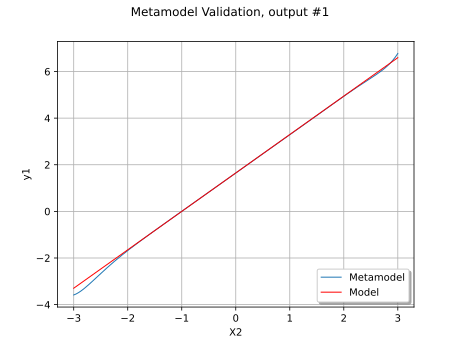
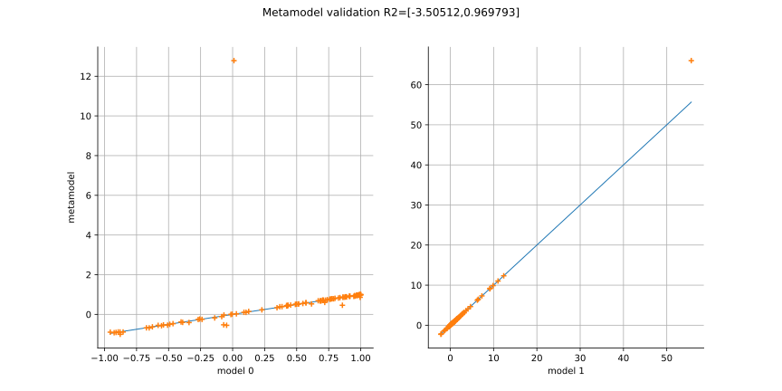
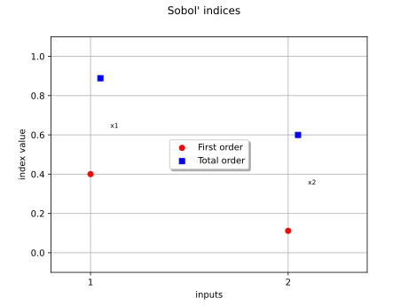
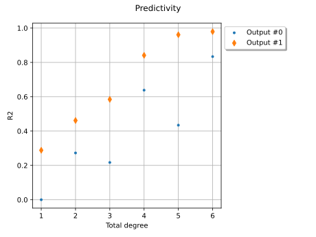

Note
Go to the end to download the full example code.
Create a polynomial chaos metamodel from a data set¶
In this example, we create a polynomial chaos expansion (PCE) using a data set. More precisely, given a pair of input and output samples, we create a PCE without the knowledge of the input distribution. In this example, we use a relatively small sample size equal to 80.
In this example we create a global approximation of a model response using polynomial chaos expansion.
Let ![\vect{g}]() be the function defined by:
be the function defined by:
![\vect{g}(\vect{x}) = \Tr{\left(\cos(x_1 + x_2), (x_2 + 1) e^{x_1}\right)}]()
for any ![\vect{x} \in \Rset^2]() .
.
We assume that
![X_1 \sim \mathcal{N}(0,1) \textrm{ and } X_2 \sim \mathcal{N}(0,1)]()
and that ![X_1]() and
and ![X_2]() are independent.
are independent.
An interesting point in this example is that the output is multivariate. This is why we are going to use the getMarginal method in the script in order to select the output marginal that we want to manage.
Simulate input and output samples¶
import openturns as ot
import openturns.viewer as otv
from matplotlib import pyplot as plt
We first create the function model.
input_names = ["x1", "x2"]
formulas = ["cos(x1 + x2)", "(x2 + 1) * exp(x1)"]
model = ot.SymbolicFunction(input_names, formulas)
inputDimension = model.getInputDimension()
outputDimension = model.getOutputDimension()
Then we create a sample inputSample and compute the corresponding output sample outputSample.
distribution = ot.Normal(inputDimension)
samplesize = 80
inputSample = distribution.getSample(samplesize)
outputSample = model(inputSample)
Create the PCE¶
Create a functional chaos model.
The algorithm needs to fit a distribution on the input sample.
To do this, the algorithm in FunctionalChaosAlgorithm
uses the BuildDistribution
static method to fit the distribution to the input sample.
Please read Fit a distribution from an input sample
for an example of this method.
The algorithm does this automatically using the Lilliefors test.
In order to make the algorithm a little faster, we reduce the
value of the sample size used in the Lilliefors test.
ot.ResourceMap.SetAsUnsignedInteger("FittingTest-LillieforsMaximumSamplingSize", 50)
The main topic of this example is to introduce the next constructor of
FunctionalChaosAlgorithm.
Notice that the only input arguments are the input and output samples.
Not all coefficients are selected in this PCE.
Indeed, the default constructor of FunctionalChaosAlgorithm
creates a sparse PCE.
Please read Create a full or sparse polynomial chaos expansion
for more details on this topic.
Get the metamodel.
Plot the second output of our model depending on ![x_2]() with
with ![x_1=0.5]() .
In order to do this, we create a ParametricFunction and set the value of
.
In order to do this, we create a ParametricFunction and set the value of ![x_1]() .
Then we use the getMarginal method to extract the second output (which index is equal to 1).
.
Then we use the getMarginal method to extract the second output (which index is equal to 1).
x1index = 0
x1value = 0.5
x2min = -3.0
x2max = 3.0
outputIndex = 1
metamodelParametric = ot.ParametricFunction(metamodel, [x1index], [x1value])
graph = metamodelParametric.getMarginal(outputIndex).draw(x2min, x2max)
graph.setLegends(["Metamodel"])
modelParametric = ot.ParametricFunction(model, [x1index], [x1value])
curve = modelParametric.getMarginal(outputIndex).draw(x2min, x2max).getDrawable(0)
curve.setColor("red")
curve.setLegend("Model")
graph.add(curve)
graph.setLegendPosition("lower right")
graph.setXTitle("X2")
graph.setTitle("Metamodel Validation, output #%d" % (outputIndex))
view = otv.View(graph)

We see that the metamodel fits approximately to the model, except
perhaps for extreme values of .
However, there is a better way of globally validating the metamodel,
using the MetaModelValidation on a validation design of experiments.
n_valid = 100
inputTest = distribution.getSample(n_valid)
outputTest = model(inputTest)
Plot the corresponding validation graphics.
metamodelPredictions = metamodel(inputTest)
val = ot.MetaModelValidation(outputTest, metamodelPredictions)
r2Score = val.computeR2Score()
graph = val.drawValidation()
graph.setTitle("Metamodel validation R2=" + str(r2Score))
view = otv.View(graph)

The coefficient of determination is not extremely satisfactory for the
first output, but is would be sufficient for a central dispersion study.
The second output has a much more satisfactory ![R^2]() : only one single
extreme point is far from the diagonal of the graphics.
: only one single
extreme point is far from the diagonal of the graphics.
Compute and print Sobol’ indices¶
Let us analyze the results of this global sensitivity analysis.
We see that the first output involves significant multi-indices with higher marginal degree.
For the second output, the first variable is especially significant, with a significant contribution of the interactions. The contribution of the interactions are very significant in this model.
Draw Sobol’ indices.
sensitivityAnalysis = ot.FunctionalChaosSobolIndices(result)
first_order = [sensitivityAnalysis.getSobolIndex(i) for i in range(inputDimension)]
total_order = [sensitivityAnalysis.getSobolTotalIndex(i) for i in range(inputDimension)]
input_names = model.getInputDescription()
graph = ot.SobolIndicesAlgorithm.DrawSobolIndices(input_names, first_order, total_order)
graph.setLegendPosition("center")
view = otv.View(graph)

Testing the sensitivity to the degree¶
With the specific constructor of FunctionalChaosAlgorithm that
we use, the FunctionalChaosAlgorithm-MaximumTotalDegree
in the ResourceMap configures the maximum degree explored by
the algorithm. This degree is a trade-off.
If the maximum degree is too low, the polynomial may miss some coefficients so that the quality is lower than possible.
If the maximum degree is too large, the number of coefficients to explore is too large, so that the coefficients might be poorly estimated.
This is why the following for loop explores various degrees to see the sensitivity of the metamodel predictivity depending on the degree.
The default value of this parameter is 10.
ot.ResourceMap.GetAsUnsignedInteger("FunctionalChaosAlgorithm-MaximumTotalDegree")
10
This is why we explore the values from 1 to 6: degrees 1-6 already show the full story (underfit -> plateau -> overfit drop), higher degrees only extend the settled lines at steep cost (one full chaos fit per degree).
maximumDegree = 7
degrees = range(1, maximumDegree)
r2Score = ot.Sample(len(degrees), outputDimension)
for maximumDegree in degrees:
ot.ResourceMap.SetAsUnsignedInteger(
"FunctionalChaosAlgorithm-MaximumTotalDegree", maximumDegree
)
print("Maximum total degree =", maximumDegree)
algo = ot.FunctionalChaosAlgorithm(inputSample, outputSample)
algo.run()
result = algo.getResult()
metamodel = result.getMetaModel()
metamodelPredictions = metamodel(inputTest)
val = ot.MetaModelValidation(outputTest, metamodelPredictions)
r2ScoreLocal = val.computeR2Score()
r2ScoreLocal = [max(0.0, r2ScoreLocal[i]) for i in range(outputDimension)]
r2Score[maximumDegree - degrees[0]] = r2ScoreLocal
Maximum total degree = 1
Maximum total degree = 2
Maximum total degree = 3
Maximum total degree = 4
Maximum total degree = 5
Maximum total degree = 6
graph = ot.Graph("Predictivity", "Total degree", "R2")
cloud = ot.Cloud([[d] for d in degrees], r2Score[:, 0])
cloud.setLegend("Output #0")
cloud.setPointStyle("bullet")
graph.add(cloud)
cloud = ot.Cloud([[d] for d in degrees], r2Score[:, 1])
cloud.setLegend("Output #1")
cloud.setPointStyle("diamond")
graph.add(cloud)
graph.setLegendPosition("upper left")
graph.setLegendCorner([1.0, 1.0])
view = otv.View(graph)
plt.subplots_adjust(right=0.7)

We see that a low total degree is not sufficient to describe the
first output with good score.
However, the coefficient of determination can drop when the total degree increases.
The score of the second output seems to be much less satisfactory:
a little more work would be required to improve the metamodel.
In this situation, the following methods may be used.
Since the distribution of the input is known, we may want to give this information to the
FunctionalChaosAlgorithm. This prevents the algorithm from trying to fit the input distribution which best fit to the data.We may want to customize the adaptiveStrategy by selecting an enumerate function which best fit to this particular example. In this specific example, however, the interactions plays a great role so that the linear enumerate function may provide better results than the hyperbolic rule.
We may want to customize the projectionStrategy by selecting a method to compute the coefficient which improves the estimation. For example, it might be interesting to try an integration rule instead of the least squares method. Notice that a specific design of experiments is required in this case.
Display all figures